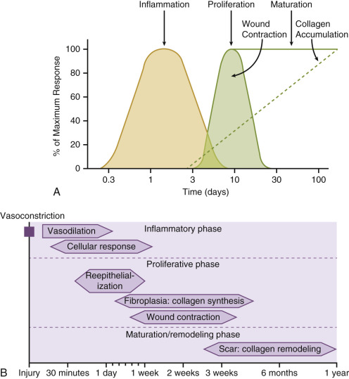

# Surgical Wounds - Surgical wounds are divided into - Closed wounds - Open Wounds (or wounds closed by secondary intention)
Normal Wound Healing

Wound Healing Source
# Cost of EUSOL | Volume (mL) | Cost (PKR) | | ----------: | ---------: | | 50 | 125 | | 125 | 375 | | 500 | 1500 |
# Primary Objective To identify the presence of a statistically significant difference in wound healing rate and cost of dressing between EUSOL dressing and standard dressing of wounds healing by secondary intention.
## Secondary Objectives To identify the presence of a statistically significant difference in: - wound healing rate - average monthly cost of dressing between standard dressing and EUSOL dressing of wounds healing by secondary intention.